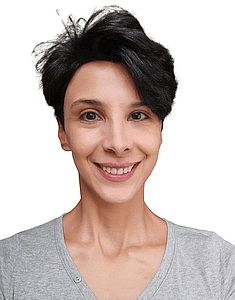

Lab Members

|
Dr. Martin Kircher Group leader since March 2017 

|

|
Dr. Max Schubach Postdoc since July 2017
|
|
Philipp Rentzsch PhD candidate since April 2017
|

|
Philip Kleinert PhD candidate since April 2018
|

|
Sebastian Röner PhD candidate since February 2019
|
|  |
Lusine Nazaretyan Master student since May 2020 |
Former members
- Louisa Krützfeldt, Master student (October 2018 - October 2019)
- Anshupa Sahu, Intern (May 2017 - September 2017)